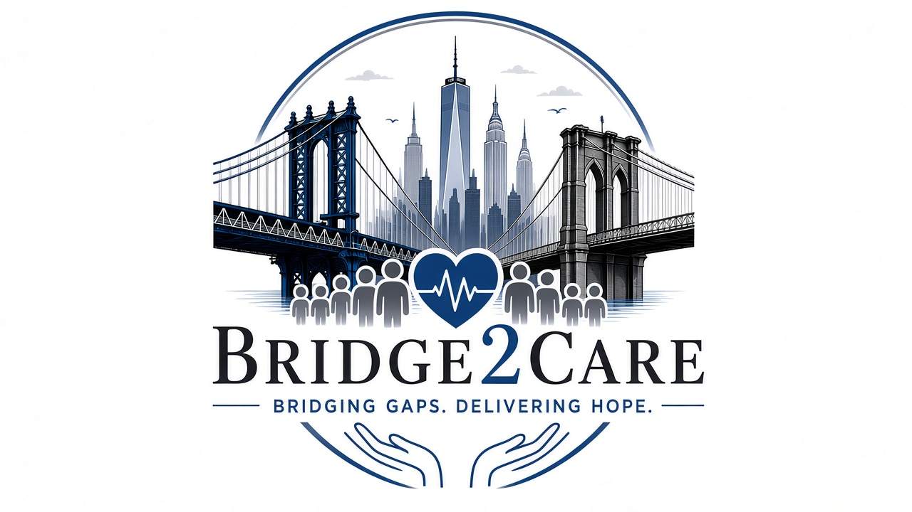
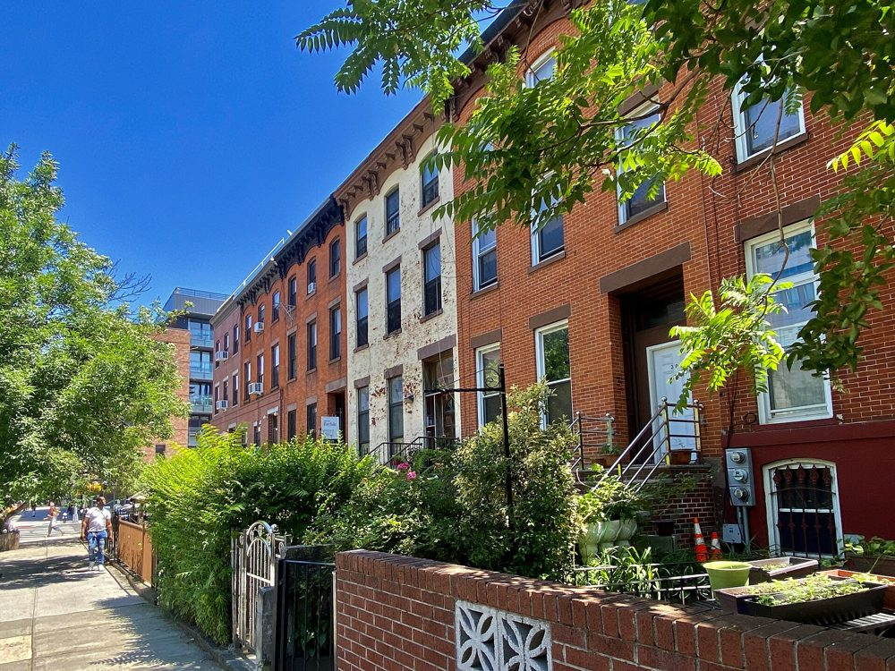
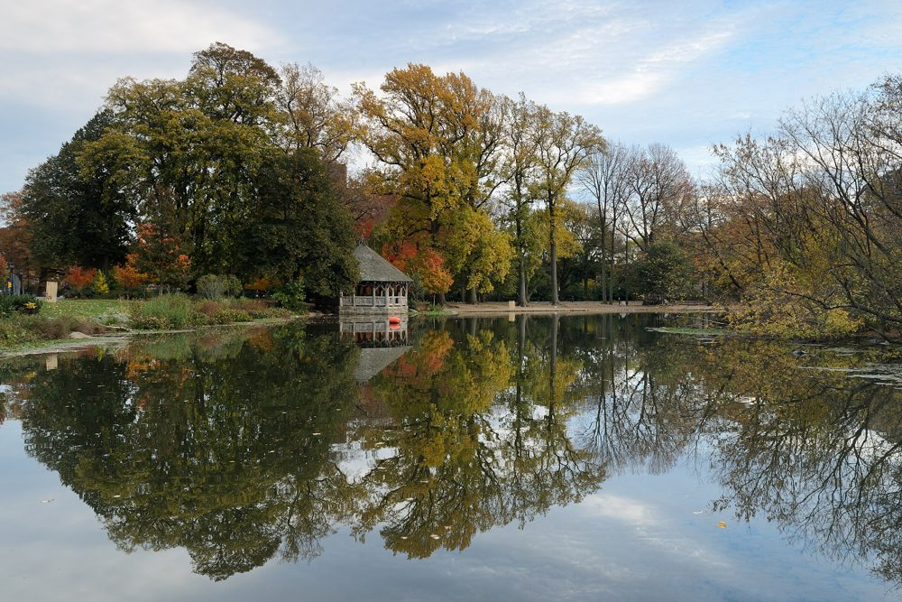

Bridging Gaps. Delivering Hope.
Free help for New Yorkers who need health coverage, benefits, and mental health care. We help you sign up, set up your appointments, and get there.
Call (718) 513-8610 Email Us
Bridge 2 Care is based in Brooklyn. We help low-income and unhoused New Yorkers get the care and benefits they need. Paperwork, phone calls, and appointments can feel like too much, especially when life is already hard. We walk with you, step by step, so you are not doing it alone.

We help you apply for Medicaid, SNAP (food stamps), and cash assistance.
We help you sign up for health insurance through NY State of Health. This help is free.
We connect you to psychiatry and therapy, including telehealth visits you can do by phone or video.
We schedule your appointments, help you get to them, and follow up to make sure things are going well.
Our help with insurance enrollment is free. We are neutral. We don't push any health plan. We help you choose what works for you.
We help you sign up for Medicaid, health insurance, and other benefits.
We find the right care for you and book your appointment.
We remind you, help you get there, and check in after.
We are here for New Yorkers who need a hand, including:
Reach out any time. We are happy to help.
Phone: (718) 513-8610
Email: info@bridge2careny.com
Address: 285 Nostrand Ave, Brooklyn, NY
In-person meetings are available in Brooklyn.